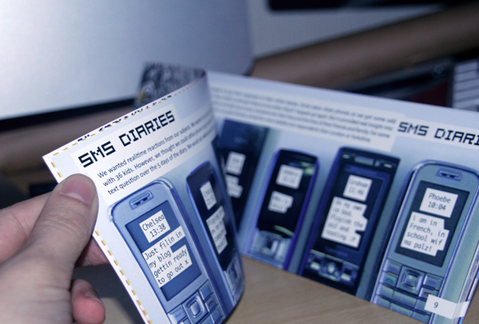
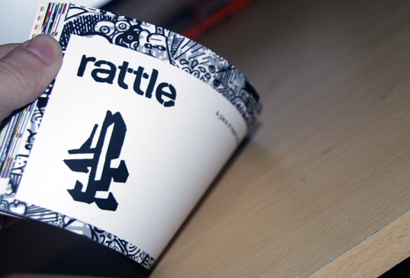

The Randomers Guide to Teenagers in a Digital Age
- 
- 
A research project to help Channel 4 and independent production companies understand what teenagers are doing with digital media, to help them pitch and commission more relevant projects.
The research was conducted with over 40 teenagers in three locations across the UK using participant observation, paired depth interviews and a workshop. Innovative approaches to the fieldwork were used to try and observe and document digital media consumption. This included an SMS ‘diary’, where each teen was prompted to reply to a call-to-action such as “what are you doing now and who are you with?”, three times daily over the course of a week.
Much research provides insight with few solutions. The insight provided by this research went hand-in-hand with methods for thinking about how to produce effective digital media services and memes. We worked with production companies to help them think through how to produce and manage digital media to ensure take up and adoption and ultimately to deliver better audience engagement.